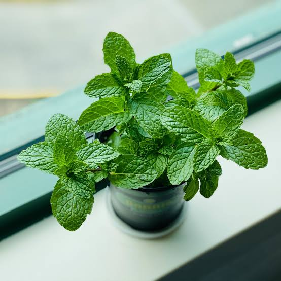
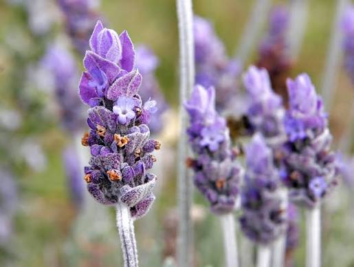
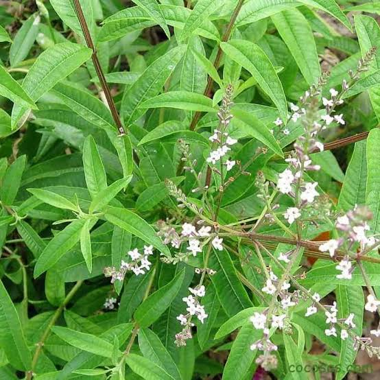
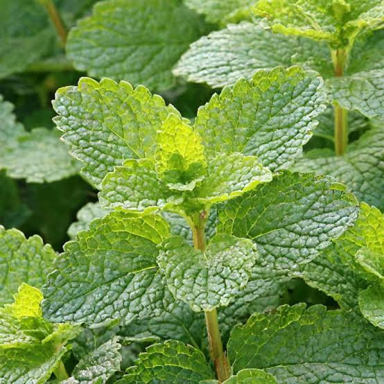
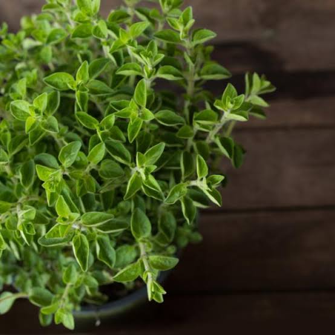

|
|
INICIO | TIPOS DE PLANTA | GALERÍA | INFORMACIÓN |
|---|
Conoce algunas plantas utilizadas tradicionalmente en diferentes regiones del Ecuador.
|
Las plantas medicinales son especies vegetales que han sido utilizadas tradicionalmente por diferentes pueblos y culturas debido a sus características y posibles beneficios para el bienestar. En Ecuador existe una gran diversidad de plantas debido a sus diferentes regiones naturales: Costa, Sierra, Amazonía y Galápagos. Muchas de estas plantas forman parte de los conocimientos tradicionales transmitidos de generación en generación. |
Algunas de las plantas que podemos conocer son:
Manzanilla |
Descripción
La manzanilla es una planta aromática conocida por sus pequeñas flores blancas con un centro amarillo. Es una planta que puede cultivarse en jardines y huertos. ¿Para qué se utiliza?Tradicionalmente se utiliza para preparar infusiones. Estas bebidas forman parte de prácticas relacionadas con la relajación y el bienestar. Parte utilizada: Flores.Importancia: Es una planta ampliamente conocida y forma parte de los conocimientos tradicionales sobre plantas. |
Hierbabuena |
Descripción
La hierbabuena es una planta aromática de hojas verdes y un olor fresco característico. Puede cultivarse en huertos y jardines. ¿Para qué se utiliza?Sus hojas se utilizan tradicionalmente para preparar infusiones y bebidas. También se utiliza como planta aromática en diferentes alimentos. Parte utilizada: Hojas.Importancia: Es una planta adecuada para huertos escolares porque permite aprender sobre cultivo, aromas y biodiversidad. |
Aloe vera |
Descripción
El aloe vera es una planta suculenta que almacena agua en sus hojas gruesas y carnosas. ¿Para qué se utiliza?El gel transparente que se encuentra dentro de sus hojas se ha utilizado tradicionalmente en preparaciones relacionadas con el cuidado de la piel. Parte utilizada: Gel interno de la hoja.Importancia: Permite aprender sobre las plantas suculentas y su capacidad para almacenar agua. |
Jengibre |
Descripción
El jengibre es una planta cuyo rizoma se utiliza ampliamente en alimentos y preparaciones tradicionales. Tiene un sabor fuerte y característico. ¿Para qué se utiliza?Se utiliza tradicionalmente para preparar infusiones, bebidas y diferentes alimentos. Parte utilizada: Rizoma.Importancia: Es importante por su uso alimenticio y por formar parte de diferentes conocimientos tradicionales. |
Lavanda |
Descripción
La lavanda es una planta aromática reconocida por sus flores violetas y su característico aroma. ¿Para qué se utiliza?Tradicionalmente se utiliza en preparaciones aromáticas y productos relacionados con el cuidado personal. Parte utilizada: Flores.Importancia: También permite estudiar la relación entre las plantas, los aromas y los insectos polinizadores. |
Cedrón |
Descripción
El cedrón es una planta aromática conocida por sus hojas alargadas y su agradable aroma cítrico. ¿Para qué se utiliza?Sus hojas se utilizan tradicionalmente para preparar infusiones aromáticas. Parte utilizada: Hojas.Importancia: Forma parte de los conocimientos tradicionales relacionados con las plantas aromáticas. |
Toronjil |
Descripción
El toronjil es una planta aromática de hojas verdes y un aroma agradable. ¿Para qué se utiliza?Tradicionalmente sus hojas se utilizan para preparar infusiones relacionadas con prácticas de relajación y bienestar. Parte utilizada: Hojas.Importancia: Forma parte de los conocimientos tradicionales sobre plantas aromáticas. |
Orégano |
Descripción
El orégano es una planta aromática utilizada ampliamente como condimento y también forma parte de diferentes prácticas tradicionales. ¿Para qué se utiliza?Sus hojas se utilizan principalmente como condimento para proporcionar sabor y aroma a diferentes alimentos. Parte utilizada: Hojas.Importancia: Es una planta útil para aprender sobre plantas aromáticas y su utilización en la cocina. |
|
Ecuador posee una gran diversidad natural. Sus regiones Costa, Sierra, Amazonía y Galápagos presentan diferentes condiciones ambientales que permiten la existencia de numerosas especies. |
| REGIÓN | CARACTERÍSTICAS |
|---|---|
| 🏔️ Sierra | Posee diferentes plantas cultivadas en huertos y jardines. |
| 🌴 Costa | Su clima cálido permite el crecimiento de diferentes especies vegetales. |
| 🌳 Amazonía | Posee una enorme biodiversidad y conocimientos tradicionales sobre numerosas especies. |
| 🏝️ Galápagos | Posee una biodiversidad única que debe ser protegida y conservada. |
|
|
Que una planta sea natural no significa que sea completamente segura para todas las personas. Algunas plantas pueden provocar alergias o interactuar con determinados medicamentos. No se debe consumir una planta si no se conoce correctamente su identificación y forma de uso. Las plantas medicinales no deben utilizarse como sustituto de un tratamiento médico. Ante un problema de salud es importante consultar con un profesional. |
|
Ecuador posee una gran diversidad de plantas y una importante tradición relacionada con su conocimiento y utilización. Conocer estas especies nos permite aprender sobre biodiversidad, agricultura, cultura y conservación ambiental. Los huertos escolares pueden ser un excelente lugar para estudiar las plantas y aprender a cuidarlas de manera responsable. |
|
🌿 PLANTAS MEDICINALES DEL ECUADOR
Proyecto de Huerto Escolar - 2026 Aprende • Cultiva • Conserva |